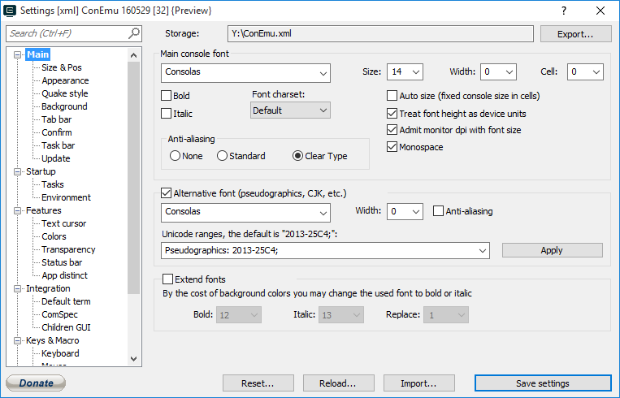

RTEXT
RTEXT
Bold (Cell) Main font weight
Italic Main font italic
Monospace Check it for non proportional (monospaced) fonts, 3rd-state - center symbols in the cells
Auto size (fixed console size in cells) Automatic font resize for the fixed real console width
Face name for main font
Extend fonts (Font charset) ConEmu is able to use normal, bold and italic fonts side by side. This feature may be useful for prompt decoration or with Colorer plugin for Far Manager (1.7x, 2.x).
Main font height
Main font width 0 - mean default width for specified height
Cell width for "Monospace" mode
Choose background color index for which ‘Bold’ font properties whill be inverted (default is Red #12)
Choose background color index for which ‘Italic’ font properties whill be inverted (default is Magenta #13)
When Bold or Italic font property was inverted, ConEmu may change background to default color (default is Blue #1)
Change pseudographics font You can specify additional font for drawing pseudographics or specified range of symbols. E.g. main - "Fixedsys", additional - "Lucida Console". You may force this font for specified range of symbols, search "Settings-ConEmu.reg" for "FixFarBordersRanges" option.
Main font charset
Show background image instead standard colors #0 and #1 (black and blue) 3rd-state - don't draw in viewer/editor
Font face used to draw pseudographics or specified range of symbols. E.g. main - "Fixedsys", additional - "Lucida Console". You may force this font for specified range of symbols, search "Settings-ConEmu.reg" for "FixFarBordersRanges" option.
WIDTH for pseudographics font. It must be wider than main font, otherwise, You may get "dashed" borders.
Path Choose background image file (bmp, jpg, png, tif) or specify solid color in any form supported by ‘Colors’ page
Choose background color indexes, which will be replaced with background image, default is ‘#0 #1’ Black and Blue. Use "*" (asterisk) for Far Manager panels background color.
Placement
Darkening
Allow background plugins (Far Manager) Enable background Far plugins (e.g. Panel Colorer), 3rd-state - don't draw in viewer/editor
Darkening